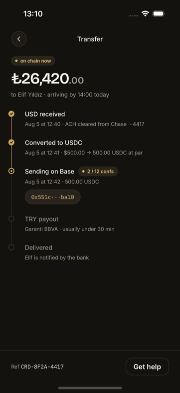
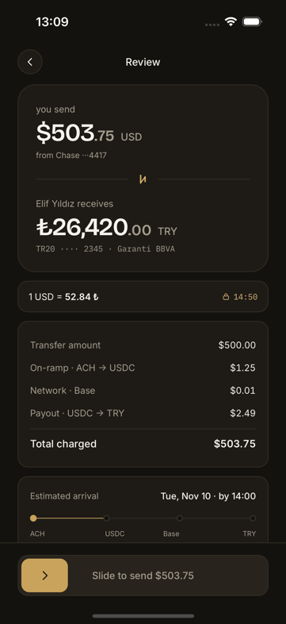
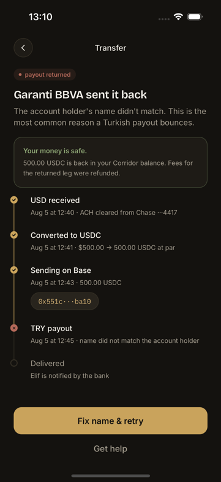

Money is never a number.
Minor units use bigint; exchange rates are rational values. USD to USDC crosses four decimal places without a float or silent truncation.
USD → USDC → TRY
Corridor is an independent case study spanning product design, React Native engineering, and integration architecture. It makes every fee, rail, wait, and failure visible before a user has to ask.

From quote and identity checks to on-chain progress, delivery proof, and a returned payout. The final three states stay on screen long enough to inspect—not just flash past as a success montage.
A bank debit, a stablecoin transfer, and a local payout each run on a different clock. A generic progress bar invents certainty. Corridor instead exposes the five states a sender can actually verify.
ACH clears from the sender's bank.
Dollars become exact minor units at par.
The hash appears before settlement finishes.
A local partner binds value to the IBAN.
The recipient's bank owns the final word.
The interface and architecture were designed together. Each visible promise has a corresponding invariant beneath it.
Minor units use bigint; exchange rates are rational values. USD to USDC crosses four decimal places without a float or silent truncation.
The client renders an issued quote; it never authors the amount, fee, rail, or expiry. Changing from ACH to card or wire creates a fresh signed quote.
A returned payout does not become a red toast and a dead end. The failed rail remains visible, the location of funds is named, and retry preserves the user's work.
Honesty is enforced by construction: disclosure copy is read from the same provider registry that binds simulated or real adapters.
The app itself holds no signing key. A separate script broadcast 1.00 USDC against Circle's canonical Base Sepolia contract, producing a public artifact that can be checked without trusting this page.
0x551c6704…a55ba10 ↗The demo receipt deliberately says that its 500.00 USDC figure is not this transaction. A proof that implies more than it proves is just another mock.
Early design phases assumed Bridge could complete the TRY payout. The provider audit found that Bridge has no TRY route in either direction. The build keeps the corridor as a disclosed integration study, moves payout behind a provider binding, and implements a supported MXN/SPEI binding to prove the seam is real.
Review exposes the full commitment. In-flight names each clock. Recovery answers the user's first question before explaining the error.


The short story ends here. The decisions, provider constraints, failure register, and implementation remain open for review.